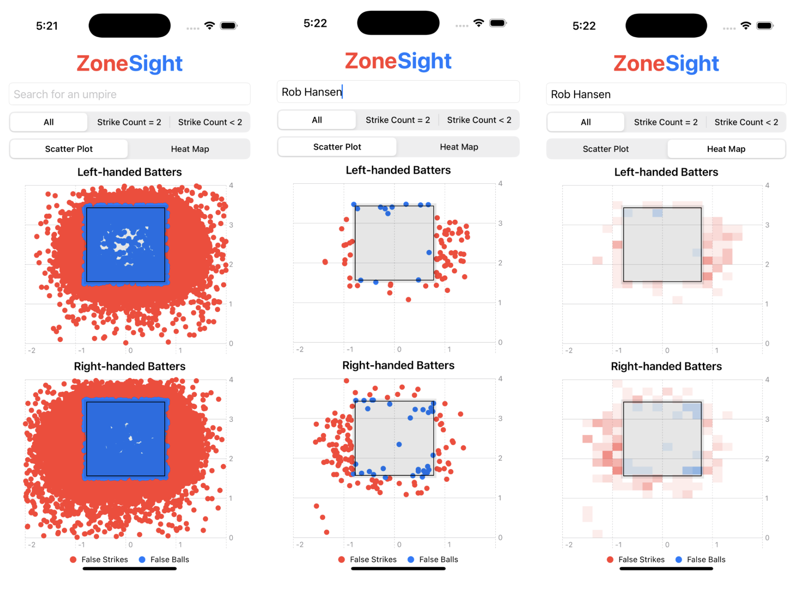

Shelby Fulton
ZoneSight
This iOS app is still in progress, but will soon be deployed to the App Store for the use of Division 1 (D1) baseball coaches and players.
ZoneSight is an app developed using Swift and Python that displays all false ball and false strike calls made by D1 umpires. Within the app, you can search for any D1 umpire and see clean and clear visualizations of where the umpire tends to make false calls in relation to the strike zone for both left-handed and right-handed batters. There are options to change the visualizations to be in scatter plot or heat map display versions. In addition, the user can easily filter further to see if the umpire has different tendencies when the strike call is less than two versus when the strike call is equal to two.
There is currently no other application that allows for such ease of D1 umpire tendencies. Having the knowledge the app displays can allow coaches and players to change their game strategies in order to make the most of the umpire's tendencies. If the app shows that they tend to call more false strikes low and away from left-handed batters, the pitching coach may tell their pitcher to aim lower and away each time a left-haned batter walks up to the plate.
The simplicity of the app allows for ease of use for coaches and players alike to access a large database and translate into useful information within seconds.
